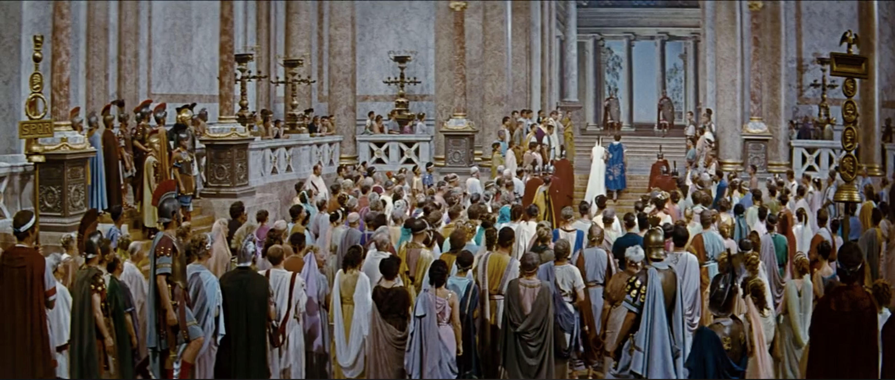
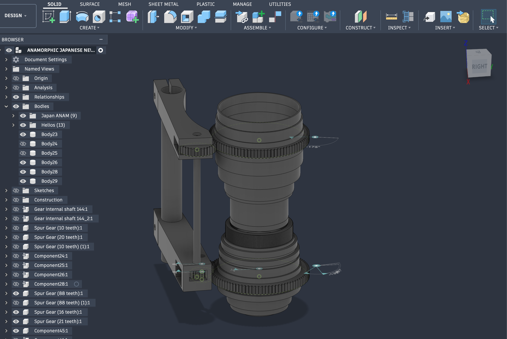
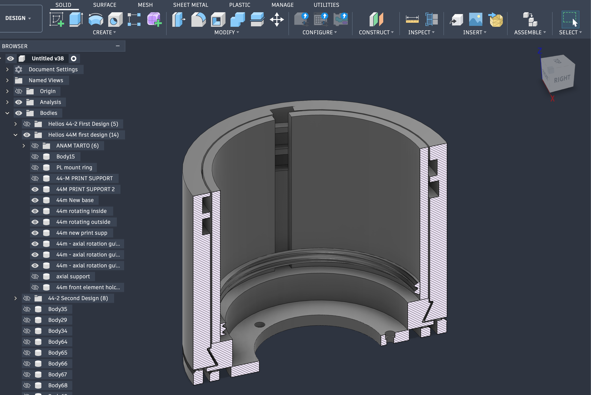

Anamorphic Optics in Hollywood Motion Picture Films
Anamorphic History
Anamorphic optical devices were originally developed in WW1 to provide a wider field of view for tanks in battle. There were other unsuccessful adaptations of the technology to motion picture but anamorphic image capture became popular after Fox bought the rights for it in 1952, creating CinemaScope. 1953’s Robe was the first film to be captured with anamorphic lenses

Early Panavision lenses between 1958 - 70s had a mechanical gearbox connect the focusring of the anamorphic extension to the focus ring of the photography lens. This solution made the anamorphic squeeze factor change as the focus-puller was adjusting the focus.

Current solutions have a glass focusing element travel back and forth in a barrel adjusted by the focus ring. In this solution both the taking lens as well as the anamorphic glass are set to infinity.

How It Works
The anamorphic image capture works by adding a cylindrical glass element either in front or in between the spherical photography lens sets. The anamorphic element has to be set to infinity focus at all time to maintain an adjustable image.
The anamorphic squeeze factor is traditionally 2x, with the most recent lenses made for digital cinema cameras offer lower squeeze factor as they are no longer capture images to 4/3 film, rather to 16/9 or 3/2 sensors.
The anamorphosis is created by the cylindrical elements which “squeeze” the wider image captured from the observed world onto a smaller surface such as the celluloid or the sensor.
The spherical lens is a piece of glass that is curved on both axis the same amount. The anamorphic lens is a cylindrical piece of glass - like the one found in prescription glasses that are made for astigmatism - that is only curved one axis, like a drinking glass.
This makes the anamorphic lens operate on two focal lengths, one axis having X focal length while the other (where the squeeze is applied) has its focal length multiplied by the squeeze factor which is traditionally 2X.